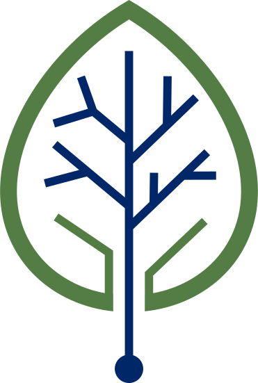

-
Experience
Our team of software engineers and technical writers have experience in every stage of the documentation process.
-
Support
Because we work fully remote, we are able to support you around the world. Since we are located in Switzerland, we can even offer on side support and training to all regions nearby.
-
Open Source
We're passionate about open source. Both when it comes to our company and the tools we use. This means that there are no hidden costs or proprietary solutions that only we can maintain.
“Docs as Code refers to the idea to create and maintain documentation the same way as code.”
We love documentation and constantly learn more about it. The best thing we can do is to share it with you. So take a look at our blog section and ask us any question you might have. Information should be free for everyone.
We love documentation and constantly learn more about it. The best thing we can do is to share it with you. So take a look at our blog section and ask us any question you might have. Information should be free for everyone.
We love documentation and constantly learn more about it. The best thing we can do is to share it with you. So take a look at our blog section and ask us any question you might have. Information should be free for everyone.
Contributing to documentation should be as easy as writing an email.
You should not need a degree in information technology to contribute to any documentation.

Developers should love to improve the documentation.
Contributing to documentation should be possible with the same tools you are used to when coding.
Documentation coming to life
We support you during every stage of your documentation.

01 Analysis
“Docs as Code” means that documentation should be created using the same tools and processes as the code development. Everyone does that differently, so there is no blueprint. We offer to take a snapshot of your current workflow, for free.
02 Win over the teams
The best idea is worthless if you cannot convey it to your colleges. Only if everyone is up for the challenge, “Docs as Code” will work out. Trust us, we know from experience. But since we have gone through that multiple times, we are more than happy to help you to “plant that seed”.

03 Design
Now that everyone is on the same track, a plan is needed. If implemented correctly, the solution will be sustainable. Therefore, it must be easy to expand and maintain.We are always on the cutting edge when it comes to the newest insights, frameworks, and tools. And since we use them daily, we can propose what's best for you in the long term.
04 Implement
The infrastructure is shared with the development team, so often there is little or nothing to extend. However, implementing the pipelines and workflows as well as putting together the used framework is another story. And don't forget about adapting the existing content and writing the new one.Depending on the strengths of your team, you might be able to do that with breeze. If not, we are here to fill the gaps for you.
05 Maintain and Grow
“For every 10th developer in your team, you should have a technical writer supporting them”. That's not a quote we have come up with, but the best practice of most tech giants. Like software, documentation is constantly changing and grows with your product. Therefore, it requires continuous maintenance.But here is the thing: not everyone can or wants to afford the same ratio as big tech companies. Especially at the beginning. We understand that. So, we will help you out as long as needed. And if you like, we will help you grow and train your team on the way, so you don't need to rely on us forever.

06 Exchange
We love documentation and constantly learn more about it. The best thing we can do is to share it with you. So take a look at our blog section and ask us any question you might have. Information should be free for everyone.We also recommend joining Communities like “Write the Docs” to have a source a knowledge and conferences, stay on the edge.
FAQs
Frequently asked question
Have a question? We’re here to help.
We love documentation and constantly learn more about it. The best thing we can do is to share it with you. So take a look at our blog section and ask us any question you might have. Information should be free for everyone.
We love documentation and constantly learn more about it. The best thing we can do is to share it with you. So take a look at our blog section and ask us any question you might have. Information should be free for everyone.
We love documentation and constantly learn more about it. The best thing we can do is to share it with you. So take a look at our blog section and ask us any question you might have. Information should be free for everyone.
We love documentation and constantly learn more about it. The best thing we can do is to share it with you. So take a look at our blog section and ask us any question you might have. Information should be free for everyone.
We love documentation and constantly learn more about it. The best thing we can do is to share it with you. So take a look at our blog section and ask us any question you might have. Information should be free for everyone.
We love documentation and constantly learn more about it. The best thing we can do is to share it with you. So take a look at our blog section and ask us any question you might have. Information should be free for everyone.